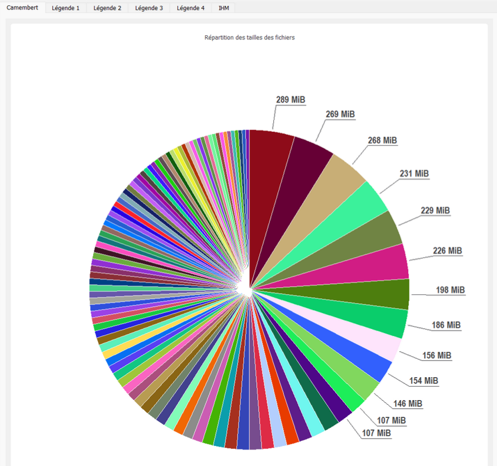

SAÉ 1.05
Traiter des données
Objectif
Développement d'un outil de reporting pour localiser les fichiers volumineux sur disque dur, destiné aux administrateurs système afin de libérer de l'espace de façon ciblée et sécurisée.
Architecture réalisée
- Développement complet d'un outil de reporting multiplateforme. Création d'une interface graphique ergonomique sous PyQt5 intégrant des graphiques interactifs.
- Conception d'un backend en Python utilisant la bibliothèque pathlib pour scanner récursivement les arborescences et générer des fichiers JSON.
- Couplage avec des scripts PowerShell pour automatiser le nettoyage ciblé.
Compétences R&T mobilisées
- AC13.01 — Utiliser un système informatique et ses outils.
- AC13.02 — Lire, exécuter, corriger et modifier un programme.
- AC13.03 — Traduire un algorithme, dans un langage et pour un environnement donné.
- AC13.06 — S’intégrer dans un environnement propice au développement et au travail collaboratif.
Technologies
Preuve
